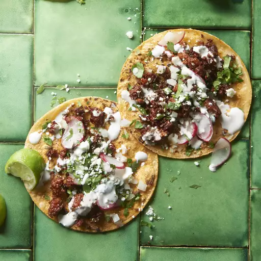

Easy Chorizo Street Tacos

These chorizo tacos use just 5 ingredients and taste amazing.
This recipe makes it quick and easy to have a perfect dish
for the entire family and a great on-the-go meal for meal prep.
- Chorizo sausage link (casing removed and meat crumbled)
- Chipotle peppers in adobo sauce - 2 Tbsp
- Corn tortillas - 4
- Chopped onion - 2 Tbsp
- Fresh cilantro - 2 Tbsp